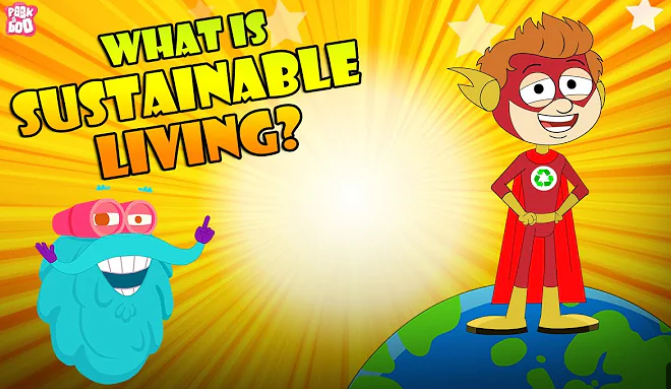
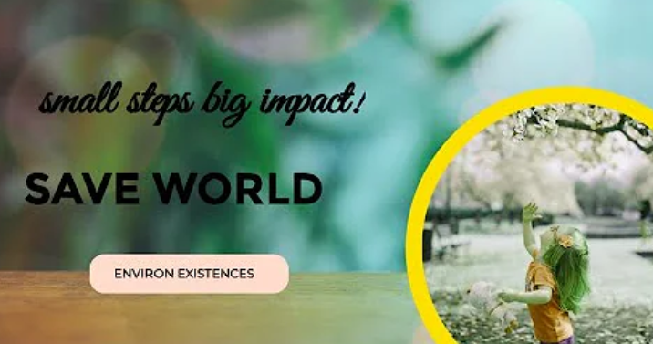

Engaging in small actions while visiting a park is an effective way to practice stewardship and ensure these green spaces remain healthy and beautiful for everyone. These simple habits transform a casual visit into an eco-friendly contribution, and setting a positive example for other visitors. Taking a moment for a small cleanup, participation in these actions directly supports vitality of our natural sanctuaries.

Eco-friendly actions
This video quickly demonstrates various ways people can act responsibly in a park or shared outdoor space. Essentially, the video is a visual reminder to practice basic "Leave No Trace" principles to keep public spaces clean and healthy.

Small actions, big impact!
This video visually reinforces the core principles of environmental stewardship through simple, relatable actions. It advocates for reducing waste and litter by promoting the use of reusable items, encouraging the proper disposal of trash, and highlighting the positive impact of individual efforts to keep parks and public spaces clean and healthy.

Eco-Friendly Habits: What Is Sustainable Living?
This video explains the concept as a necessary approach to minimize environmental damage given the world's increasing population and limited resources. To safeguard the future, the video advocates for making small, impactful changes in daily habits.
.jpg)